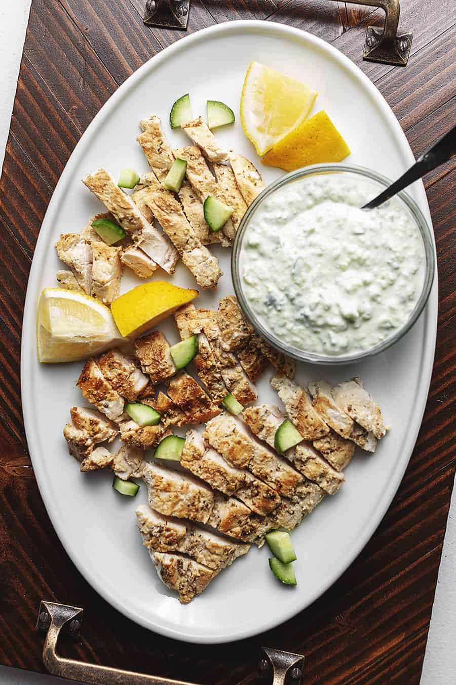

Shannon's Greek Chicken
\

Chicken Recipe
My wife Shannon enjoys exploring new recipes and this one is her take on Mediterranean style chicken! This delicious marinated chicken is best served with Tzatziki sauce and roasted potatoes.
Ingredient List
- Chicken Breasts
- Minced Garlic
- 2 TBSP Olive Oil
- Lemon Juice
- Dried Oregano
- Salt
- Black Pepper
- White Vinegar
Steps
- Cut the chicken into cubes
- Add all ingredients to a container and marinate chicken for at least 2 hours
- Cook chicken over medium heat until ready to eat
Return to Main Menu